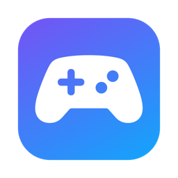
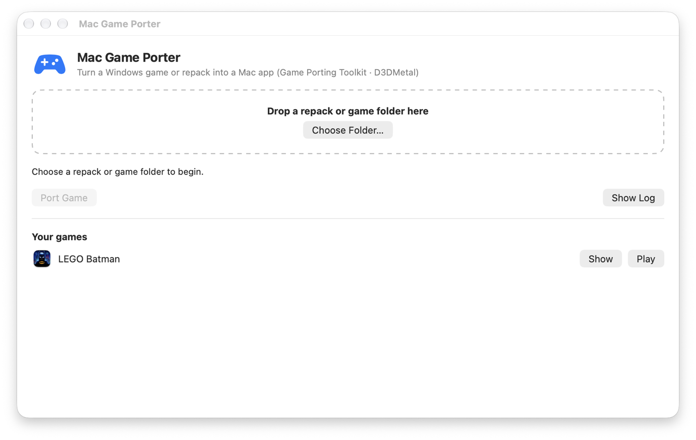

Play Windows games on your Mac
Mac Game Porter is a free, open-source app that turns Windows games and repacks into Mac apps on Apple Silicon (M1–M5). It uses Apple's Game Porting Toolkit and D3DMetal to run DirectX 11 and 12 games on Metal.
Get it on GitHub Quick start
Why Mac Game Porter
DirectX 12 on Metal
Apple's D3DMetal from the Game Porting Toolkit, set up for you. No bottles, no terminal.
Repacks without setup.exe
FitGirl-style FreeArc repacks are unpacked natively on macOS, avoiding the installer that stalls in CrossOver and Wine.
One app per game
Every game becomes ~/Games/Game.app with its own icon. Export a DMG to copy it to another Mac.
Fits your screen
Borderless fullscreen at your display's exact size, with no overflowing or cropped windows on Retina displays.
Tuned for speed
MetalFX upscaling for DLSS games, esync, AVX through Rosetta, and sensible graphics presets.
Controllers
DualSense and Xbox pads are passed through as raw HID, so games drive their own controller features.
Compared with the alternatives
| Mac Game Porter | CrossOver | Manual Wine / GPTK | |
|---|---|---|---|
| Price | Free, open source | Paid | Free |
| DirectX 12 via D3DMetal | Yes | Yes | With manual setup |
| Installs FreeArc repacks without setup.exe | Yes | No | No |
| Standalone app per game, DMG export | Yes | Bottles | No |
Tested games
| Game | Engine / API | Status |
|---|---|---|
| LEGO Batman: Legacy of the Dark Knight | Unreal Engine 5 · DirectX 12 | Playable on MacBook Air M5 |
Quick start
git clone https://github.com/KarmSakha/mac-game-porter.git && cd mac-game-porter
brew install innoextract rust mingw-w64
gui/build.sh && cp -R "build/Mac Game Porter.app" ~/Applications/Open Mac Game Porter, drop a repack or game folder on it, press Port Game, then Play. Requires an Apple Silicon Mac on macOS 14 or later.
FAQ
How do I play Windows games on a Mac with Apple Silicon?
Install Mac Game Porter, drop the game folder or repack on it and press Port Game. It uses Apple's Game Porting Toolkit (Wine and D3DMetal), so DirectX 11 and 12 games render on Metal.
How do I install a FitGirl repack on a Mac?
FitGirl-style repacks use a Windows setup.exe whose unpacker stalls under CrossOver and Wine on macOS. Mac Game Porter unpacks the .bin archives natively using the repack's own decoder list, then turns the game into a Mac app. Only install games you own.
Is Mac Game Porter a free CrossOver alternative?
Yes. It is free and open source (MIT) and builds on the same technology, Wine and Apple's D3DMetal, producing one standalone app per game.
Can I run DirectX 12 games on a Mac?
Yes. Apple's D3DMetal translates DirectX 12 to Metal, and Mac Game Porter sets it up automatically. Performance depends on the game and the Mac.
Which Macs are supported?
Apple Silicon Macs (M1, M2, M3, M4 and M5) running macOS 14 Sonoma or later.